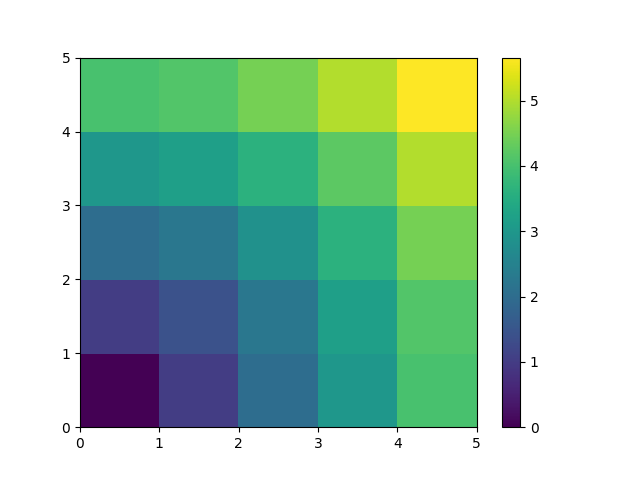

Note
Go to the end to download the full example code
Distances exercise¶
Plot distances in a grid
import numpy as np
import matplotlib.pyplot as plt
x, y = np.arange(5), np.arange(5)[:, np.newaxis]
distance = np.sqrt(x**2 + y**2)
plt.pcolor(distance)
plt.colorbar()
plt.show()
Total running time of the script: (0 minutes 0.074 seconds)